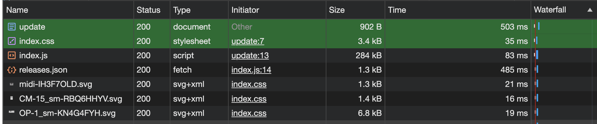
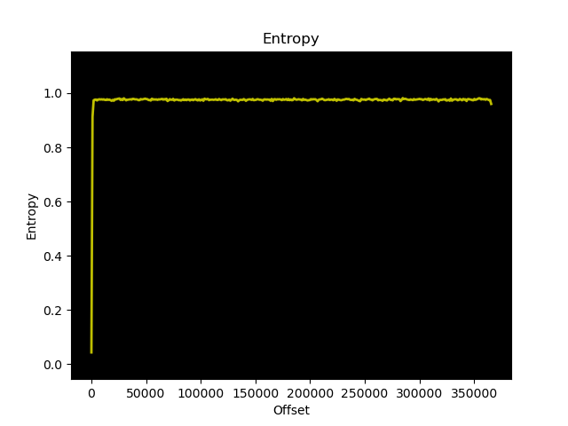

Getting firmware from teenage engineering.
Summary:
A nobody like me, getting firmware from teenage engineerings website.
Introduction
Teenage engineering direct people to their website updater https://teenage.engineering/apps/update which can update a number of Teenage Engineering devices.
As usual, web programming is going to us javascript so lets start by seeing what is loaded. I fire up developer tools and go to the network table, while loading the page:

We can see that it loads index.js , this would be where I would start. Downloading that file it looks like a mess, but its javascript so that really shouldnt be surprising, i mean what else can it be.
Much like most JS written by crazy people, it uses react and some kind of twisted obfustication process to minimise the js.
If i download the js, its not the entire file:
()=>{var Mp=Object.create;var Uo=Object.defineProperty;var Np=Object.getOwnPropertyDescriptor;var
Op=Object.getOwnPropertyNames;var Lp=Object.getPrototypeOf,zp=Object.prototype.hasOwnProperty;var
pr=(e,t)=>()=>(t||e((t={exports:{}}).exports,t),t.exports),Tu=(e,t)=>{for(var r in t)Uo(e,r,
{get:t[r],enumerable:!0})},Hp=(e,t,r,i)=>{if(t&&typeof t=="object"||typeof t=="function")for
(let n of Op(t))!zp.call(e,n)&&n!==r&&Uo(e,n,{get:()=>t[n],enumerable:!(i=Np(t,n))||i.enumerable})
;return e};var Fe=(e,t,r)=>(r=e!=null?Mp(Lp(e)):{},Hp(t||!e||!e.__esModule?Uo(r,"default",
{value:e,enumerable:!0}):r,e));var Nu=pr(J=>{"use strict";var
If i view the request in the details tab however, chrome was nice enough to "pretty print" the javascript file.
Unfortunately, its a mess of react and minification has stripped useful names from the functions and variables, so I'm going to have to take another direction. Great.
The midi diversion.
So, I noticed that when I visit the page, a prompt appears in chrome asking for permission to access a midi device. So I assume that this means the browser needed to support some web midi standard.
I googled 'midi browser support' and chose the most legit looking link in the list, I think I can trust MDN right ? So in https://developer.mozilla.org/en-US/docs/Web/API/Web_MIDI_API
I see 97 mentions of "MIDI" in the javascript, so i'll try another idea.
Tracking the download.
I found there were, many, many uses of the word, "url" so checking that was going to be painful.
I know that this site probably and keeps a download in memory using javascript which means that this is likely using 'fetch' somewhere beneath the covers.
The first use is here:
static async fetchFirmware(e) {
let t = await fetch(e);
return new Uint8Array(await t.arrayBuffer())
}
I don't have an "EP-133" to plug in and test, otherwise at this point i'd just put a break point on the fetch, and then inspect variables while beginning the update.
So I look for another fetch
let r = (await fetch("/_software/releases.json").then(i=>i.json()).then(i=>i).catch(i=>i)).devices;
Oh hello friend, this looks like a method to get a list of software releases, lets see what we can find.
I fudged around and found the final url here: https://teenage.engineering/_software/releases.json
Which looks something like this
{ "devices": [ { "sku": "TE028AS", "version": "1.2.10", "fw_url": "https://teenage.engineering/_software/tx-6/tx-6_firmware_1_2_10.tfw", "link": "https://teenage.engineering/downloads/tx-6", "release_notes": "- integration with TP-7 recorder and new usb audio mode\n- usb audio host mode support and integration with CM-15 microphone\n- control master volume with OR-1 remote\n- compensate clock for more accurate sample rate" }, { "sku": "TE002AS002", "version": "1.5.0", "fw_url": "https://teenage.engineering/_software/op-1/field/op1_field_firmware_1_5_0.tfw", "link": "https://teenage.engineering/downloads/op-1/field", "release_notes": "- new effect: terminal\n- tape merge drop\n- bug fixes" }, { "sku": "TE029AS", "version": "1.0.5", "fw_url": "https://teenage.engineering/_software/cm-15/cm-15_firmware_1_0_5.tfw", "link": "https://teenage.engineering/downloads/cm-15", "release_notes": "- initial release" }, { "sku": "TE025AS", "version": "1.0.8", "fw_url": "https://teenage.engineering/_software/tp-7/tp-7_firmware_1_0_8.tfw", "link": "https://teenage.engineering/downloads/tp-7", "release_notes": "- recording sample rate selectable\n- continue recording on new file\n- adjust led strength in three levels\n- dim display on inactivity\n- option to disable memo wake\n- rocker tuning\n- faster mtp transfer\n- tuning of internal speaker\n- bug fixes" }, { "sku": "TE032AS001", "version": "1.1.2", "fw_url": "https://teenage.engineering/_software/ep-133/ep-133_firmware_1_1_2.tfw", "link": "https://teenage.engineering/downloads/ep-133", "release_notes": "- while holding fader button, red leds will blink to show which fader functions have been tweaked\n- hold erase+fader two seconds while stopped to reset all fader levels of the selected group and pattern\n- group project volume are now reset when loading a project\n- floppy icon enabled to show when data is being saved and will blink to indicate space is being freed up in the background after erasing a sound\n- usb icon is now lit when there is a connection. icon blinks when there is activity\n- tweaked envelope release and filter resonance\n- fixed various stability problems\n- fixed lost midi messages\n- fixed chorus audio glitch\n- fixed swapped left/right channels" } ] }
So, i'll go snarf down "https://teenage.engineering/_software/ep-133/ep-133_firmware_1_1_2.tfw"
We know from the Teenage engienering page that there is alsov ersion 1.1.0 and version 1.1.1
wget https://teenage.engineering/_software/ep-133/ep-133_firmware_1_1_2.tfw wget https://teenage.engineering/_software/ep-133/ep-133_firmware_1_1_0.tfw wget https://teenage.engineering/_software/ep-133/ep-133_firmware_1_1_1.tfw
So, now we have the firmare, I'd like to look at how it works.
Using the firmware analysis tool binwalk , I tried to see if it contained any known file headers. It didnt look good, there are a lot of false positives, every one of of them turned out to be incorrect.
The binwalk documentation says that encrypted firmware should have a high degree of randomness across the file.
Here is the graph that it produced, its very for each of the firmware files, so I wont upload all three.

The first chunk of data up to 0x480 do not contain randomness.
00000000: babe cafe 003b 5200 0100 0100 0200 0000 .....;R......... 00000010: 0800 0100 0000 0000 0000 0000 0000 0000 ................ 00000020: 0000 0000 0000 0000 0000 0000 0000 0000 ................ 00000030: 0000 0000 0000 0000 0000 0000 0000 0000 ................ 00000040: beef cafe 0100 05bf 9b64 5700 0100 0100 .........dW..... 00000050: 0200 0000 0000 0000 0800 0100 0000 0000 ................ 00000060: 0000 0000 0000 0000 0000 0000 0000 0000 ................ 00000070: 0000 0000 0000 0000 0000 0000 0000 0000 ................ 00000080: 3db8 f396 0000 0000 0004 0000 70ba 0500 =...........p... 00000090: 0400 0000 0101 0200 0000 0000 0000 0000 ................ 000000a0: 0000 0000 0000 0000 0000 0000 0000 0000 ................ <snip> 00000450: 0000 0000 0000 0000 0000 0000 0000 0000 ................ 00000460: 0000 0000 0000 0000 0000 0000 0000 0000 ................ 00000470: 0000 0000 0000 0000 0000 0000 0000 0000 ................
Some of these fields can be mapped to values if we read the javascript from the update utility. I will see what i can determine from there.
The next step might be to dump the firmware from the flash memory on the real hardware, however I dont have a lot of experience in this, I would need to buy hardware to to do it.
Conclusion
Sadly, Teenage Engineering ships encrypted firmware, which I have shown that you can get a copy of. None of the verisons have unencrypted data, so the key to decrypt is not available to the public at this time.
If you have high resolution shots of the PCB, please send them to me.
If you are from teenage engineering and willing to share their build environment and code, that'd be nice, please contact me.
Resources:
- Teenage engineering update utility - https://teenage.engineering/apps/update
- Binwalk (firwmare analysis tool) - https://github.com/ReFirmLabs/binwalk